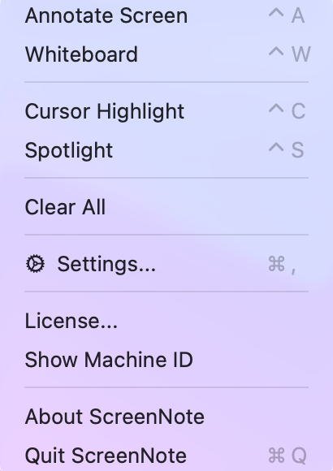
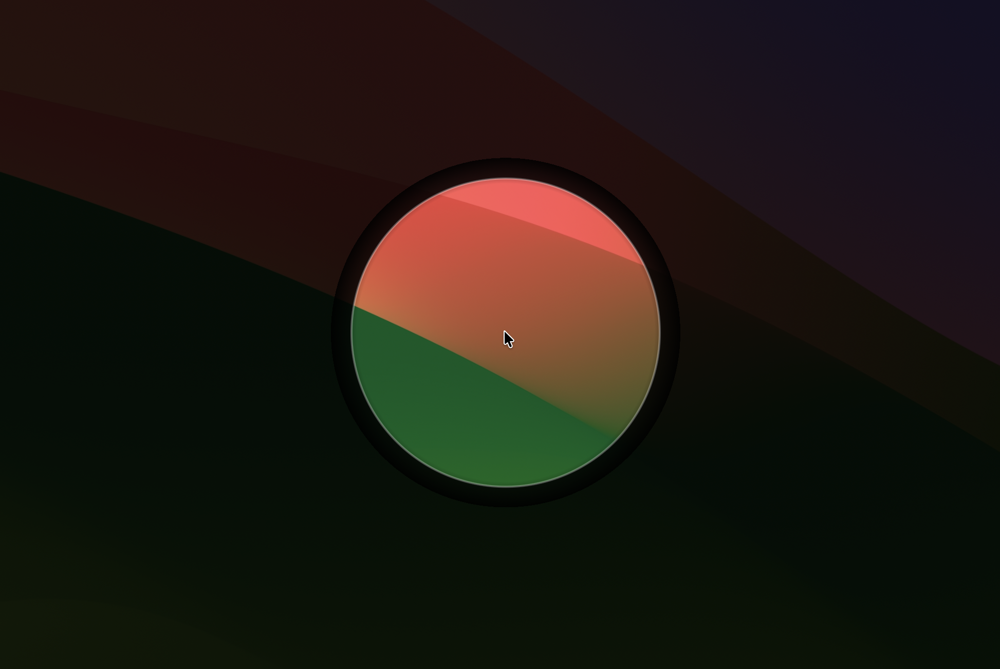
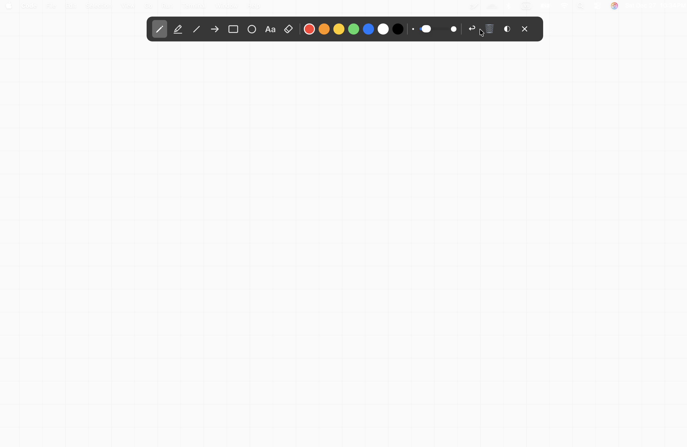

Screen
Note
Tải miễn phí
Annotation chuyên nghiệp
Dành cho macOS
"Biến mọi cuộc trò chuyện trở nên trực quan hơn"
Tải ScreenNote.dmg (1MB)

Điều khiển từ Menu Bar
Highlight chuột thông minh

Chế độ Spotlight tập trung

Bảng trắng thuyết trình